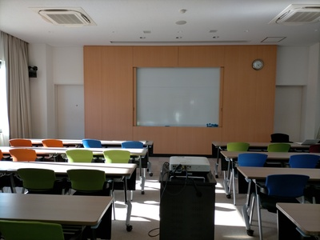

計算・言語・論理の研究集会 2023 御宿
基本情報
- 日時
- 2023年8月21日（月）から2023年8月24日（木）
- 場所
- 千葉工業大学御宿研修センター
- 少し坂を登った先にきちんとした門があるのでそこから入ってください
- 千葉県夷隅郡御宿町岩和田1320
- JR外房線御宿駅下車、徒歩18分
-
- 参加費
- 無料。ただし、宿泊を伴う場合は実費を別途徴収します。
参加予定者（記載希望者のみ）
- 新屋良磨
- 木村大輔
- 鈴木悠大
- 中澤巧爾
- 堀弘昌
- 松田直祐
- 中村誠希
- 間庭彬仁
講演（順次追加）
- 堀弘昌
- 無限証明体系と循環証明体系の証明能力同等性
- 中澤巧爾
- 循環証明とカット除去
- 新屋良磨
- 形式言語理論への測度論的アプローチ
- 竹田侑人
- The computability theoretic and reverse mathematical analysis of Ramsey's Theorem
- 五十里大将
- 2つ組ラムゼイ定理に対する保存拡大性（及び証明翻訳）
- 鈴木悠大
- Π11-CA0 の Π12 の部分について
- 本田真之
- General topology on the second order arithmetic
- 間庭彬仁
- TBA
講演者向け情報
- セミナールーム・スクリーン・プロジェクタ（HDMI）


- ホワイトボード
- 

連絡先
世話人 安部達也 ⟨(λX.abe.XaXsuya@iX-chiba.ac.jp)t⟩